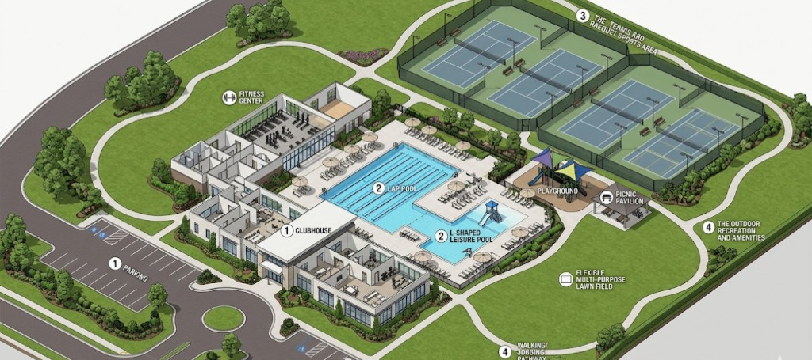

Property Owners
Property Documentation: Maximizing Value Across the Ownership Lifecycle

The long-term success of recreational facilities—from municipal parks to sports complexes—requires an accurate understanding of their current state to meet community needs and address challenges like wear, changing safety standards, and strategic capital planning. Comprehensive “existing conditions documentation” is the necessary foundation for any maintenance, renovation, or expansion project, providing objective, verifiable data to inform cost-effective decisions. This process moves beyond anecdotal knowledge and cursory visual assessments. It involves measuring, modeling, and recording all buildings, grounds, and specialized amenities to create a readily accessible, sharable record for all facilities planning and operations. While maintenance staff possess valuable institutional knowledge, detailed documentation ensures continuity as experienced staff retire.
Existing Conditions Process and Deliverables
Documentation typically begins with thorough on-site data capture, including interior and exterior LiDAR scanning, 360° photography and video, and drone photography of the site and significant features. The design team interprets this raw data, such as the LiDAR “point cloud” and photographs, to generate an overall 3D model with detailed sections and elevations for critical buildings and elements. A low-detail 3D “walkthrough” is generated quickly for quality assurance and to allow the owner and consultants to visualize the space without repeated site visits. Optional documentation can include detailed landscape, electrical, and structural plans. The primary deliverables are the Existing Conditions Model and associated documentation, including 2D floor plans, sections, elevations, site plans, and the 3D BIM model, often in Autodesk’s Revit format, which allows for the generation of various reports and schedules.
Traditional 2D CAD (Computer-Aided Design) is a digital drafting tool for creating 2D representations of building elements. In contrast, BIM (Building Information Modeling) extends CAD by generating a 3D model that acts as an information-rich database. BIM models contain geometry, but also non-graphic data like material, cost, and manufacturer, allowing for enhanced analysis, collaboration, and lifecycle management, making it a virtual representation of the building. Increasingly, facilities are choosing 3D BIM over 2D CAD to increase the utility of data for planning and to reduce the cost and difficulty of generating presentation graphics.
Existing Conditions documentation is a critical component of effective strategic planning. This data-rich understanding of all assets enables facility management to move from reactive to proactive, long-term decision-making. It informs strategic planning by identifying facilities nearing the end of their useful life and accurately forecasting future capital needs, ensuring investments align with the facility’s long-term vision.
For Capital Improvement projects, documentation is the single source of truth, drastically reducing the risk of unforeseen conditions and design errors that cause costly delays. Accurate measurements and materials data allow for precise scoping, budgeting, and seamless integration of renovations.
In Maintenance and Operations, this documentation is paramount for optimizing daily functions. It transforms maintenance into a predictive, planned activity by cutting down on troubleshooting time and streamlining regulatory compliance and preventative maintenance scheduling. This ensures maximum uptime and a consistently high-quality user experience.
Comprehensive Existing Conditions Documentation is a strategic imperative for the successful stewardship of recreational facilities. By adopting objective, data-rich records based on 3D Building Information Modeling (BIM), stakeholders gain an unparalleled single source of truth. This foundational data optimizes maintenance, de-risks capital projects, and enables sound strategic planning, ultimately ensuring the facility remains safe, functional, and valuable for generations to come.
Property Documentation: Maximizing Value Across the Ownership Lifecycle
Accurate plans and models fast
2D Plans, 3D models and thorough Photo Documentation
Planning for transition, growth and safety with ECD
Efficient, profitable, property operation and management with ECD
ECD: The Blueprint for Flawless Events
Cost Reduction and Risk Mitigation in Construction
An accurate foundation for success in modern landscape architecture
Discuss documentation scope for your recreational facility or campus.
Get in TouchA comprehensive list of types of buildings, sites, and campuses Ground Truth 3D has scanned, with links to content where available.
Discuss scope, deliverables, and timeline with our team.
Get in TouchStart with a conversation about your documentation needs.
Get in Touch